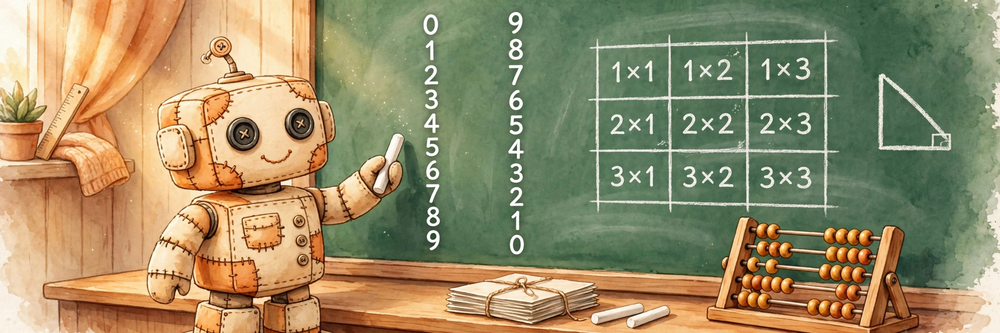

TRICKS WITH REASONS → TABLES THAT FIT A PAGE → NUMBERS THAT WORK
Everyday
Math.
Every other room on the STEM bench spends numbers; this one is about the numbers themselves. The tricks come with their reasons showing. The fractions and percents are the ones people actually freeze on. The formulas arrive with worked examples from kitchens, driveways, and restaurant tables. Numbers too huge and too tiny to write get tamed by a counting trick, and the log table — three centuries of arithmetic on one page — comes with the skill of reading between its lines. A calculator waits at the end, honestly labelled, for checking the work your head just did.
01 / THE TRICKS, WITH THEIR REASONS
Two columns write the nines.
A trick is a pattern that has been caught and tamed — and a pattern is just a reason you can see. So this room shows the reason with every trick, starting with the best one. To write the whole nines table, you need no multiplication at all: write 0 to 9 down one column and 9 to 0 up the other, and read across. Build it slowly and watch the answers appear.
The nines bench — build the table
| × 9 | tens column ↓ | ones column ↑ | the answer | digits add to |
|---|
At one row the pattern is invisible. By five rows it is shouting. The last column is the tell: every answer's digits add to 9, because each step adds a ten and takes one away.
Your fingers know it too
THE SAME TRICK, ON YOUR HANDS
Hold up all ten fingers. To multiply 9 by any number up to 10, fold down that finger, counting from the left. The fingers still standing on its left are the tens; the fingers on its right are the ones. For 9 × 4, fold the fourth finger: 3 fingers, a gap, 6 fingers — 36. It is the two columns again, worn on your hands: every step right moves one finger from the ones side to the tens side.
Fold the nth finger: left of it is tens, right of it is ones.
The pattern is the base talking
A SMALL TASTE OF NUMBER THEORY
Nine is not magic; it is just one less than ten, and we count in tens. Count in eights instead and a different digit wears the crown: the multiples of 7, written in base eight, go 7, 16, 25, 34, 43 — and every one's digits add to 7. In any base, the charmed number is the base minus one. That is the whole flavor of number theory in one bite: the patterns live in the counting system, and once you see the system, the patterns explain themselves.
In base ten the charmed digit is 9. In base eight it is 7. Always the base, minus one.
02 / MORE OF THE TRICK BAG
Split, add — and squares that end in 5.
The ×11 bench — split and add
Try 85 and watch the middle sum reach ten — the carry is the only wrinkle, and the bench shows it happening.
The ending-in-5 bench — squares in your head
Works at any size: 115² is 11 × 12 with a 25 tacked on — 13,225. Surveyors and carpenters have run this one in their heads for centuries.
03 / THE CHECKERS
Rules that vote, and a check that catches lies.
Before calculators, arithmetic defended itself with checks — quick rules that could prove an answer wrong without redoing the work. Two of them live here: the divisibility rules, which say whether a number divides evenly just by looking at it, and casting out nines, the bookkeeper's lie detector.
The divisibility bench
Why the digit rules work: 2, 5, and 10 read the last digit because 10 is 2 × 5. The 4-rule reads the last two digits because 100 is 4 × 25. And 3 and 9 read the digit sum because every power of ten is a multiple of 9 plus 1 — so a number and its digit sum always leave the same remainder on 9.
Casting out nines — the bookkeeper's check
Try claiming 1795 — wrong by exactly 9 — and watch it pass the check anyway. Then claim 1796 and watch it fail. That pair is the honest shape of every check ever devised: a failure is proof, a pass is only encouragement.
04 / FRACTIONS & PERCENTS
The arithmetic people freeze on.
Nobody freezes on the times table in a kitchen; they freeze on three-quarters of a cup doubled, and on what 25% off actually leaves in the wallet. These benches do that arithmetic with the working shown, in the units it really happens in.
Add fractions — find the shared cup
Workshop version: a board plan calls for 3/4 of an inch here and 1/6 there — same bench, same shared denominator, different apron.
Scale a recipe — double it, halve it
The restaurant bench — tips and discounts
Estimate first, compute second
THE FENCE, NOT THE PHOTOGRAPH
An estimate won't give you the answer; it gives you a fence the answer must live inside, which catches most blunders. Round to friendly numbers and multiply those: 48 × 51 ≈ 50 × 50 = 2,500 (the true answer, 2,448, lives just inside the fence). A 20% tip on a $47 bill is "about nine and a half dollars" before it is anything exact. And the grocer's trick: round every item up to the next dollar as you shop, and the total in your head is a ceiling the till can never break through.
Round first. If the exact answer lands outside the fence, the exact answer is wrong.
05 / THE FORMULA SHELF
Formulas people actually meet.
A formula is a recipe with letters: put the numbers you have in the slots, and the number you need comes out. No formula on this shelf stands alone — each carries a worked example from a real driveway, garden, or pay stub.
Area & perimeter
A = L × W · P = 2 × (L + W)
A garden bed 4 metres by 3: area = 4 × 3 = 12 m² of soil cover to buy, and perimeter = 2 × (4 + 3) = 14 m of edging to fence it. Two different questions, two different formulas — area fills, perimeter surrounds. The round cousin: a 12-inch pizza has radius 6, so its area is π × 6² ≈ 113 square inches and its crust runs π × 12 ≈ 37.7 inches around.
Area is the carpet. Perimeter is the skirting board.
Volume
V = L × W × H
An aquarium 60 cm × 30 cm × 30 cm holds 60 × 30 × 30 = 54,000 cm³ — and since a litre is 1,000 cm³, that is 54 litres of water. Water weighs a kilogram a litre, so the full tank carries 54 kg of water before the glass and gravel: the real reason you fill an aquarium where it stands.
Multiply the three sides. Then ask what the answer weighs.
Distance = rate × time
D = R × T — THREE DOORS, ONE FORMULA
Drive at 45 mph for 2.5 hours: 45 × 2.5 = 112.5 miles. The same formula turns around: 150 miles at 50 mph takes 150 ÷ 50 = 3 hours, and covering 150 miles in 3 hours means averaging 150 ÷ 3 = 50 mph. Any two of the three hand you the third — that is what makes it a formula and not just a fact.
Know any two of distance, speed, and time, and the third is arithmetic.
Simple interest
I = P × R × T
Park $500 at 4% simple interest for 3 years: I = 500 × 0.04 × 3 = $60, and the account ends at $560. "Simple" means the interest is always figured on the original $500 — never on the interest itself. Compound interest removes that mercy, which is why it builds savings faster and debts scarier.
The bank's gentlest formula. Its compound cousin is the one to respect.
The Pythagoras bench — ladders and televisions
Everyday anchors: a 5-metre ladder with its foot 1.5 m from the wall reaches √(25 − 2.25) ≈ 4.77 m up it — run the bench in "find a leg" mode with 5 and 1.5. And a television's size is this theorem in disguise: a "55-inch" TV is 55 inches across the diagonal, which works out to about 47.9 × 27.0 inches of actual screen.
The average bench
An average is a total, shared out evenly: the team's scores, the week's temperatures, the month's electric bill. It describes the pile, not any single member of it.
06 / HUGE AND TINY
Numbers too big to write, counted anyway.
Some numbers outgrow their digits. The count of atoms in a tablespoon of water has 23 zeros; the width of one atom needs ten decimal places before its first honest digit. Scientific notation is the truce: write the digits that matter, then let one small exponent count the hops the decimal point made to get there.
Write it the short way
And back again — read a short number long
Avogadro's number — the bridge to Chemistry
6.022 × 10²³ — A DOZEN, GROWN ENORMOUS
A mole is a counting unit, like a dozen — a dozen the size of a mountain range: 6.022 × 10²³ of anything. A mole of water molecules weighs 18 grams, about a tablespoon of water, and holds that many molecules. Chemists count atoms by weighing them in moles, which is why this number is the bridge: Everyday Chemistry's formula bench weighs substances in exactly this currency.
Open Everyday Chemistry → — where the counting turns into substances.
The other direction
TINY NUMBERS, SAME TRICK
The notation doesn't care which way the point hops. An atom is about 1 × 10⁻¹⁰ metres across; a red blood cell is about 8 × 10⁻⁶ metres; the negative exponent just counts hops to the right instead of the left. Huge and tiny are the same skill read in two directions — which is why one bench teaches both.
Positive exponent: the point hopped left. Negative: it hopped right.
07 / THE LOG TABLE
The full table, and reading between its lines.
Everyday Engineering carries the pocket version of this table — ninety entries, the engineer's companion for three centuries. This room carries the full table: mantissas to the hundredth, 1.00 to 9.99, on the printable sheet below, plus the bench that uses it the table's own way. The method is the one from the pocket table, one digit deeper: split the number into a characteristic (its size — just the power of ten) and a mantissa (from its digits alone), look the digits up, and use proportional parts for the digit the table doesn't print.
The log bench — the full table at work
Because the bench reads the printed table's rounded values rather than a calculator's innards, its last decimal can sit a unit off the true log — the same fourth-decimal wobble the pocket table carries, shown rather than hidden.
The pocket grid — mantissas for 1.0 to 9.9
Proportional parts — the worked example
ONE DIGIT MORE THAN THE TABLE PRINTS
For log of 4.372: the full table gives 4.37 → .6405 and 4.38 → .6415, a difference of .0010. The final 2 sits 2/10 of the way across that step, so add 2/10 × .0010 = .0002: log 4.372 ≈ .6407 — which is what the calculator says, to the fourth decimal. A table with a thousand entries and one small habit of mind reaches as far as numbers anyone meets.
The bench above does this for any number. The printable sheet carries the full table it reads from.
The pocket version lives in Engineering
THE SAME TABLE, AN ENGINEER'S HAT
Everyday Engineering keeps the ninety-entry pocket table, its own bench, and the slide rule — the same logarithms turned into lengths on a stick. The mathematics is this room's; the three centuries of bridges built with it are that room's story.
These logarithms sing
PITCH IS A LOGARITHM YOU CAN HEAR
Everyday Sound spends this room's logarithms on music: each octave doubles a frequency, so equal steps of pitch are equal ratios — a piano keyboard is a log table you play. Its intervals are this room's ratios and its rhythm is this room's fractions, all of it audible.
08 / THE CALCULATOR
Check the work your head just did.
Every bench in this room computes out loud. This one just computes — a plain scientific calculator for checking the tricks, the tables, and the formulas against. It speaks degrees until you tap DEG to switch it to radians, and its EE key types scientific notation: 6.022 EE 23 is Avogadro's number.
The scientific calculator
Try it against the room: log of 1000 should say 3; 2 xʸ 10 should say 1024; √144 should say 12. If it ever disagrees with a bench, the bench shows its working — check which one slipped.
The calculator lies in the last digit
THE HONESTY LINE, PRINTED ON THE TOOL
Ask this calculator — or any computer — for 0.1 + 0.2 and its display will tidy the answer to 0.3. One digit deeper, your machine's raw answer is 0.30000000000000004 (that number was computed by your own device, just now, to fill this sentence). Computers count in binary fractions, and a tenth has no exact binary form — the same way a third has no exact decimal one. The error is far too small to move money or bend bridges, and far too real to hide: a tool that admits its limits is a tool you can trust with the rest.
Exact for counting. Approximate for measuring. The last digit is where the approximation lives.
09 / THE PRINTABLE TABLES
One button. Two tables. Paper forever.
Tables were always meant for paper — pinned over the workbench, folded into the toolbox. This button prints the room's two working tables as one clean sheet: the times table to 16 × 16 (four past the usual twelve, because sixteenths run the ruler and the workshop), and the full log table with its how-to. On screen the sheet wears its paper colors; on paper it is simply the sheet.
Everyday Math — the printable tables
The times table, to 16 × 16
Common logarithms — how a small table reaches 1000
Every number's log is a characteristic plus a mantissa. The characteristic is the number's size, read off its power of ten: 1 → 0, 10 → 1, 100 → 2, 1000 → 3 (and going down: 0.1 → −1, 0.01 → −2). The mantissa depends only on the number's digits and comes out of the table below — so 5, 50, 500, and 0.05 all share the mantissa .6990 and differ only in characteristic, and one table of digits covers every number up to 1000 and far beyond.
To look a number up: split it into size and digits. Find the row for the digits' first two figures and the column for the third — that entry is the mantissa. For one digit more, use proportional parts: take the difference to the next entry, and add that fraction of it — the extra digit over ten. Worked example, log of 4.372:
Mantissas — rows are the first two digits, columns the third
Everyday Math · Everyday Cool — free to print, pin up, and share (CC BY 4.0). The calculator in the room checks the table; the table explains the calculator.
10 / LINKS OUT
Links out.
Every destination below was checked live on 19 November 2026, and each opens in a new tab. The shelf leaves this page; the benches above never do.
The ideas, one by one — Wikipedia
- Multiplication ↗
What the times table is a table of: the operation itself, its history, and the algorithms behind the tricks.
- Multiplication table ↗
The grid on the printable sheet, treated properly — its patterns, its diagonals, and its long classroom history.
- Mental calculation ↗
The trick bag, widened: more methods in the family of split-and-add and the ending-in-5 square.
- Casting out nines ↗
The bookkeeper's check in full: why roots work, and the same honest limit the bench shows — errors of exactly 9 slip through.
- Divisibility rule ↗
Every rule the bench votes with, plus the ones for 7, 13, and beyond, with their proofs sketched.
- Fraction ↗
Parts of a whole, treated fully: equivalent fractions, the arithmetic, and why the shared denominator is the whole game.
- Percentage ↗
Hundredths as a language: the tip and discount benches' home article, including the percentage-point trap.
The bigger machinery — Wikipedia
- Algebra ↗
Where the formula shelf leads: letters standing for numbers, and equations as balanced scales.
- Pythagorean theorem ↗
The ladder-and-television theorem in full — its proofs (there are hundreds) and its three-thousand-year paper trail.
- Logarithm ↗
The full table's mathematics: bases, characteristics by their modern name, and the tables' history from Napier onward.
- Scientific notation ↗
The hop-counting notation treated properly, including the engineering variant that hops in threes.
- Avogadro constant ↗
The bridge number itself: how 6.022 × 10²³ was measured, and why chemists count by weighing.
In plain English
- Math is Fun · Numbers ↗
A gentle, worked-example tour of numbers and their tricks — the friendliest next read after this room.
11 / KEEP GOING
Sister rooms.
Everyday Chemistry
Where the mole gets spent: atoms counted and weighed, formulas taken apart — Avogadro's number is the bridge, and it lands there.
Everyday Engineering
The pocket log table in its natural habitat: ninety mantissas, the slide rule, and three centuries of machines that multiply force but never energy.
Everyday Measure
The units these numbers wear: the metric staircase, conversions with their working shown, and the traps between the systems.
Everyday Sound
Where the numbers become audible: intervals as ratios, rhythm as fractions, pitch as logarithms — and a piano that records what you play into a real MIDI file.
12 / HELP
Help — how Everyday Math works.
The manual for this workshop — what each part does, the simplifications it makes, and where its information comes from. This page and the full README work offline; the GitHub links need the internet.
The tricks, with their reasons
Every trick bench shows its working in steps, and the last step is always the reason. The nines table is built from two columns (0–9 down, 9–0 up) because 9 = 10 − 1; ×11 splits and adds because 11 = 10 + 1; the ending-in-5 square works because (10h + 5)² = 100h(h + 1) + 25. A trick whose reason you can state is a tool; one you can't is a superstition with good PR.
The checkers
The divisibility bench votes on a whole number with the rules for 2, 3, 4, 5, 6, 9, 10, and 11, each with its reason attached. Casting out nines checks a claimed product by digital roots: if the roots disagree, the claim is certainly wrong; if they agree, the claim is encouraged but not proven — an answer off by exactly 9 passes, and the bench says so to your face.
Fractions & percents
The fraction benches add over a least common denominator and scale by whole numbers and halves, showing each rewrite; answers come reduced, and as mixed numbers when a cook would measure them that way. The percent benches figure tips and discounts from the one line everything percent is: p% of X is X × p ÷ 100.
The formula shelf
Each formula card carries a worked example with real numbers, because a bare equation teaches nothing. The Pythagoras bench runs the theorem both ways — find the long side from two legs, or a leg from the long side and the other leg — and the average bench adds a list and shares it out, showing both steps.
Huge and tiny numbers
The notation benches convert both ways: type a number and watch the decimal point hop into scientific form, or give a digit part and an exponent and watch it grow back. The exponent is nothing but the hop count, with its sign for direction. Avogadro's number, 6.022 × 10²³, is the exhibit that bridges to Everyday Chemistry's mole.
The log table
The log bench looks numbers up the printed table's way: characteristic from the power of ten, mantissa from the full hundredths table, and proportional-parts interpolation for the digit beyond the table — each step printed. The pocket grid on the page is the tenths table shared with Everyday Engineering; the full table lives on the printable sheet. Because the bench reads the table's rounded values, its fourth decimal can sit a unit off the true log, on purpose and in the open.
The calculator
A chain calculator: type a number, tap an operation, type the next, tap =. Function keys (log, ln, √, x², 10ˣ, sin, cos, tan, 1/x) act on the number showing. xʸ is an operation like + — type the base, tap xʸ, type the exponent, tap =. EE types an exponent for scientific notation (6.022 EE 23). DEG/RAD switches the trig between degrees and radians. C clears, ⌫ erases one character, ± flips the sign.
The printable tables
The Print button prints one sheet: the times table to 16 × 16 and the full log table — mantissas for 1.00 to 9.99 in a row-and-column grid — with the characteristic rule and a worked proportional-parts example at the top. The sheet is generated from the same tables the benches read, so what you pin over the bench is what the page computed with.
Honest limits — the last digit lies
Three limits, stated rather than hidden. The log benches compute from rounded printed tables, so their fourth decimal can wobble by a unit — the historical accuracy, shown on purpose. Casting out nines can prove a claim wrong but never prove one right. And the calculator, like every computer, rounds its display: 0.1 + 0.2 is stored as 0.30000000000000004 and shown as 0.3. The tests in this folder re-check every rule on every run.
Works offline?
Yes. The tricks, the benches, the calculator, the tables, and this Help all run from the files in this folder — including inside the desktop app. Only the Links Out shelf needs the internet, because those pages live on other people's sites.